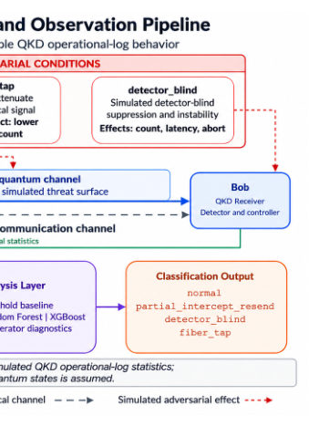

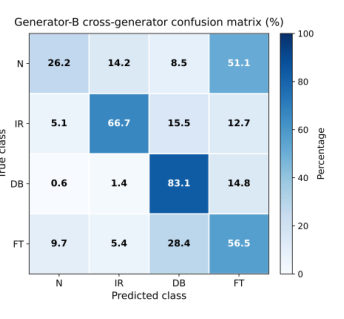
← Index · ← Previous · Next →
Authors: Jia-Hao Wen, Wen-Hao Bian, Jing Wang
Type: theory · Category: strongly correlated electrons · PDF: https://arxiv.org/pdf/2610.25046v1
Analysis basis: full PDF text, analyzed in chunks
Topic relevance: Keldysh / 2PI / non-Gaussian methods 1/5
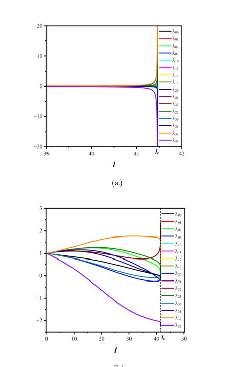
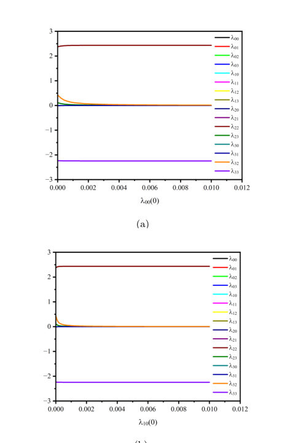
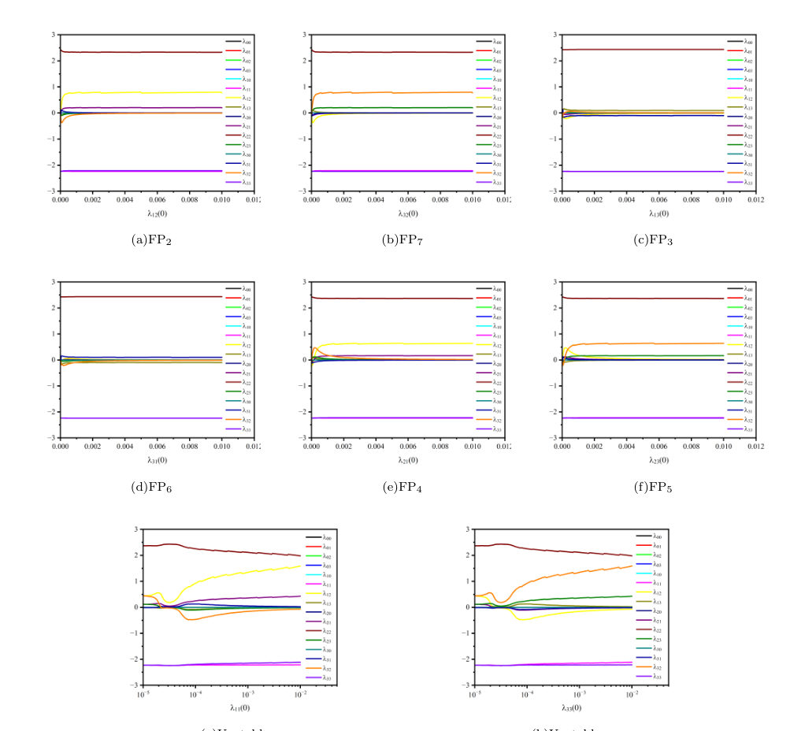
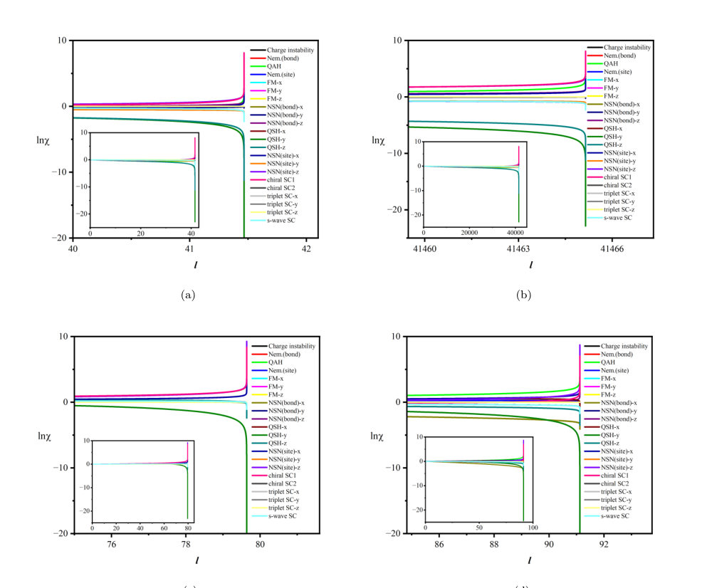
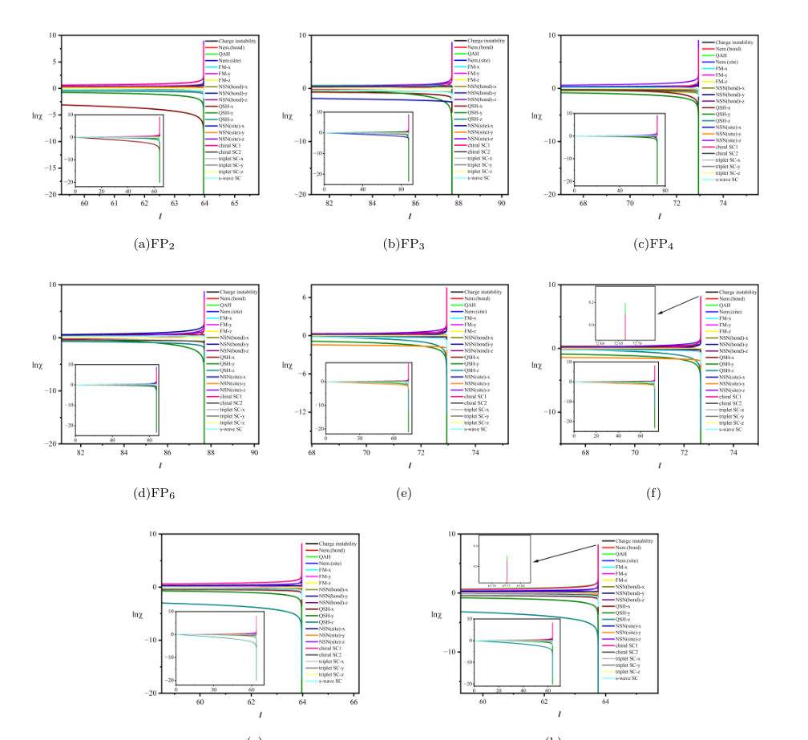
Summary. This theoretical work uses the Renormalization Group to study how strong electron-electron interactions drive competing quantum instabilities in 2D semimetals with quadratic band crossings. By analyzing all 16 interaction channels, the authors map out a complex phase diagram, predicting multiple possible ground states like QAH or superconducting orders depending on the system's initial coupling strengths.
Why it may be interesting. The detailed RG analysis of competing instabilities and the identification of trajectory-dependent physics provide a rich theoretical framework for understanding emergent topological and correlated phases in low-dimensional materials.
Main problem. The paper investigates the role of complete fermion-fermion interactions in driving competing instabilities within two-dimensional quadratic band crossing point (QBCP) semimetals.
Main result. The low-energy physics is highly dependent on initial conditions, leading to various stable phases such as Nematic spin-nematic (NSN), Quantum Anomalous Hall (QAH), and chiral superconducting orders.
Method. The primary method employed is the Momentum-shell Renormalization Group (RG) approach, which derives coupled flow equations for all 16 marginally short-range fermion-fermion interactions.
Model / system. The system modeled is a spin-1/2 checkerboard-lattice QBCP semimetal, analyzed using an effective action combining a quadratic free part and general fermion-fermion interaction terms.
Key observables. Dominant and subdominant instabilities, including NSN, QAH, $\mathrm{SC}_1$, and QSH orders; the evolution of source terms ($\delta S$).
Important parameters / regimes. The initial coupling strengths ($\lambda_{ij}$), which determine the flow path between various fixed points (FPs).
Assumptions / limitations. The analysis relies on the assumption that all 16 fermion-fermion interaction channels must be considered, correcting limitations of previous models that used only a subset of interactions.
Figures summary. Figure 1 illustrates the energy-dependent evolution of couplings, showing how rescaled couplings flow to a fixed point, while Figure 9 and 10 detail one-loop Feynman diagrams for interaction and source term renormalization.
Paper structure. The paper systematically proceeds by introducing the model, deriving the coupled RG flow equations, analyzing the flow trajectories based on initial conditions, identifying the resulting instabilities, and concluding with a comprehensive understanding of the quantum critical behavior.
Two-dimensional quadratic band crossing point (QBCP) semimetals serve as a fertile platform for interaction-driven quantum criticality, nevertheless, the role of the complete fermion-fermion interactions remains largely unexplored. To address this, we systematically investigate the low-energy physics of a spin-1/2 checkerboard-lattice QBCP semimetal by considering all 16 marginally short-range fermion-fermion interactions. Using the momentum-shell renormalization group, we derive the coupled flow equations, which reveal that the low-energy physics is governed by a series of fixed points. Depending on the initial conditions, the system may exhibit a single stable fixed point, several discrete fixed points, or three continuous groups of fixed points parameterized by a few variables. By introducing source terms and evaluating susceptibilities, we identify the dominant and subdominant instabilities. The leading phases include nematic spin-nematic (NSN), quantum anomalous Hall (QAH), chiral superconducting ($\mathrm{SC}_1$), and quantum spin Hall (QSH) orders. Moreover, several features distinguish our findings from previous simplified models. Off-diagonal interactions generate terms that promote orders absent in such models, the continuous groups allow systematic tuning of the leading instability, and trajectory-dependent instabilities emerge where the full RG flow, rather than the fixed point alone, determines the dominant state. These results offer a comprehensive theoretical understanding of low-energy quantum critical behaviors and phase instabilities in two-dimensional QBCP semimetals and related electron systems.
Authors: Indra Gankhuyag, Piers Coleman
Type: theory · Category: strongly correlated electrons · PDF: https://arxiv.org/pdf/2610.26858v1
Analysis basis: full PDF text, analyzed in chunks
Topic relevance: Keldysh / 2PI / non-Gaussian methods 1/5
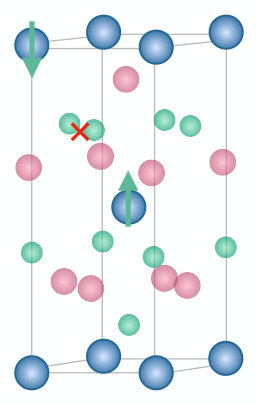
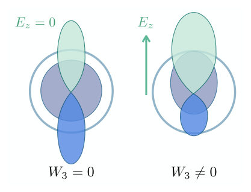
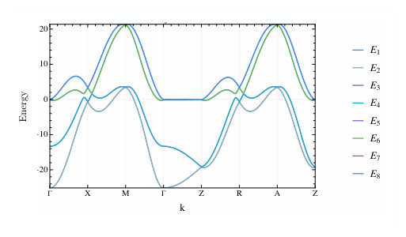
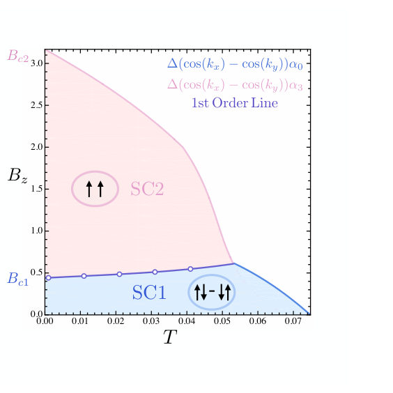
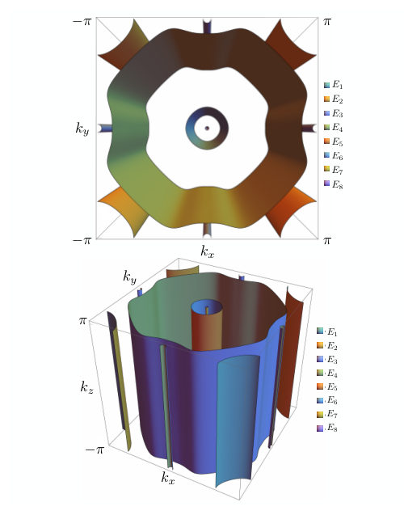
Summary. This theoretical work models superconductivity in CeRh2As2 using a Kondo lattice approach to explain the field-induced transition between even and odd parity superconducting states. The key finding is that local symmetry breaking generates an Anti-Symmetric SOC, which stabilizes these competing pairing symmetries. It provides a general framework for understanding unconventional pairing in heavy fermion systems.
Why it may be interesting. The mechanism of generating unconventional pairing symmetries (like odd-parity pairing) via structural symmetry breaking (local inversion symmetry breaking) is a general theme in strongly correlated materials, relevant to understanding pairing in non-centrosymmetric superconductors.
Main problem. The paper addresses the origin of superconductivity in the heavy fermion superconductor CeRh2As2, specifically focusing on the mechanism behind the field-induced phase transition between even and odd parity superconducting states.
Main result. The authors develop a Kondo lattice model showing that local hybridization driven by broken inversion symmetry generates an Anti-Symmetric SOC (ASOC), leading to nearly degenerate even and odd parity superconducting states and predicting a field-induced parity transition.
Method. The methodology involves developing a Kondo lattice model, calculating the f-electron self-energy, and using group theory (symplectic group) to analyze the symmetry constraints on the pairing states.
Model / system. The system is CeRh2As2, a heavy fermion superconductor. The model is a Kondo lattice Hamiltonian incorporating local hybridization terms that break inversion symmetry, leading to the ASOC interaction.
Key observables. Field-driven parity transition between even-parity and odd-parity pseudospin triplet superconducting states; symmetry-allowed pairing states (Table I).
Important parameters / regimes. Magnetic field (near 4 T); hybridization strength (W); Kondo coupling strength (J).
Assumptions / limitations. The analysis uses a mean-field approach, approximates the conduction electrons with a single band, and assumes the ASOC arises from local parity breaking hybridization.
Figures summary. Figure 1 illustrates the crystal structure and shows two pairing possibilities stabilized by staggered ASOC (uniform vs. staggered solutions).
Paper structure. The paper develops the Kondo lattice model, derives the ASOC term from local hybridization, analyzes the resulting competing even/odd parity superconducting states, and discusses implications for other heavy fermion systems.
Spin triplet superconductors are of interest because of their topological properties, and their robustness to high magnetic fields. CeRh$_2$As$_2$ is a unique heavy fermion superconductor with both even-parity and candidate odd-parity superconducting phases with a special feature enabling a field induced phase transition between the two. The field induced transition which switches the parity of the Cooper pairs is enabled by a staggered antisymmetric spin orbit coupling (ASOC) interaction. However, the heavy fermion origins of the superconductivity in CeRh$_2$As$_2$ and the origin of the antisymmetric spin-orbit coupling are currently unexplored. Here, we develop a Kondo lattice model for CeRh$_2$As$_2$ and demonstrate how local hybridization between Cerium $d$- and $f$-orbitals, driven by the locally broken inversion symmetry, at the Cerium sites generates the ASOC. The resulting Kondo lattice model leads to nearly degenerate even and odd parity superconducting states that display a field induced parity transition between an even-parity state and an odd-parity pseudospin triplet state. We discuss the wider implications of our results extended to other heavy fermion systems like CeSiI.
Authors: Matthias Gruber, Sabrina Herbst, Ivona Brandic, Vincenzo De Maio
Type: theory · Category: quantum information and computing · PDF: https://arxiv.org/pdf/2610.26472v1
Analysis basis: full PDF text, analyzed in chunks
Topic relevance: quantum measurements 1/5
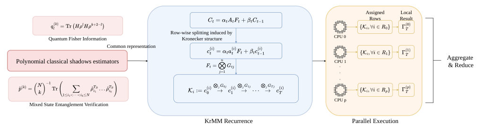
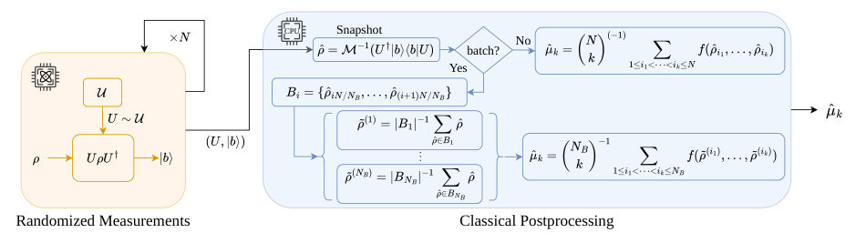
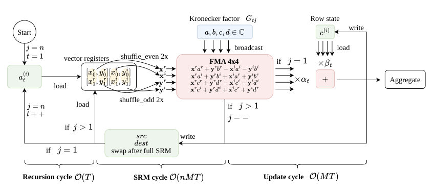
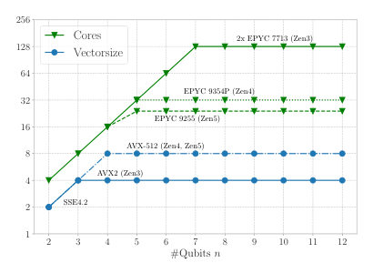
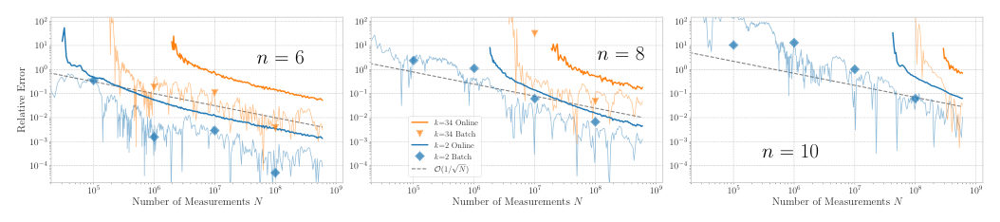
Summary. This paper introduces a novel, highly parallel computational technique to estimate difficult nonlinear properties of quantum states using classical shadows. By mapping the estimation problem onto a structured Kronecker-matrix-matrix recurrence, the authors enable massive parallelization via row-wise decomposition and custom SIMD optimization. This significantly boosts the throughput for tasks like QFI estimation, making previously computationally prohibitive quantum characterization feasible on modern HPC hardware.
Why it may be interesting. This work provides a concrete, high-performance computational tool for characterizing quantum states that goes beyond simple expectation values, directly impacting the feasibility of verifying quantum hardware properties.
Main problem. The paper addresses the computational bottleneck in estimating nonlinear properties of quantum states using the classical shadows formalism, which is otherwise intractable.
Main result. By identifying a recurring computational kernel structured as Kronecker-matrix-matrix (KrMM) recurrences, the authors enable massive parallelization via row-wise partitioning and custom SIMD vectorization.
Method. The core method involves reformulating polynomial estimators into KrMM recurrences, which are then decomposed into independent row-wise Kronecker-matrix-vector (KrMV) recurrences for parallel processing.
Model / system. The work analyzes quantum states ($ ho$) and their properties, utilizing the classical shadows framework derived from randomized measurements on quantum systems.
Key observables. Nonlinear properties such as purity and Quantum Fisher Information (QFI) are key observables being estimated.
Important parameters / regimes. The complexity scales are analyzed concerning the number of measurements ($N$), the order of the polynomial ($k$), and the number of qubits ($n$).
Assumptions / limitations. The approach assumes that the estimators can be mapped onto a structured recurrence relation (KrMM) that allows for row-wise decomposition.
Figures summary. Figures illustrate the comparison between plain and batch classical shadows, and detail the implementation of the fused row kernel using custom SIMD data layouts for high parallel efficiency.
Paper structure. The paper first introduces the classical shadows framework and the difficulty of nonlinear estimation. It then derives the KrMM recurrence structure, details the row-wise decomposition and custom hardware implementation (SIMD/SRM), and finally benchmarks the approach on specific tasks like QFI estimation, showing scaling results.
While quantum technologies are rapidly evolving, near-term applications heavily rely on hybrid quantum-classical paradigms. Among these, the classical shadows framework has gained a lot of traction, not only for quantum information science, but also for the development and verification of quantum hardware. It allows to efficiently classically estimate many properties of quantum states from randomized measurements alone, a task that is otherwise intractable due to the destructive nature of measurements in quantum systems. There are, however, many properties of interest that are, due to their very problem formulation, not efficiently estimable. In this work, we identify a computational kernel occurring in estimators of polynomial functions, a class of problems that are in general computationally difficult to solve. We show that this structure allows a row-wise partition that, together with a custom SIMD vectorization, enables massive parallelization and can reduce the computational cost significantly. We show applicability and scalability of the approach on different tasks, and our results showcase that the approach allows high sequential throughput and close-to-ideal parallel scaling. The work thus provides a new way of identifying and exploiting structure in classical shadow estimators, resulting in practical advantages on inherently difficult problems.
Authors: Yun Shang
Type: theory · Category: quantum information and computing · PDF: https://arxiv.org/pdf/2610.24503v1
Analysis basis: full PDF text, analyzed in chunks
Topic relevance: quantum measurements 1/5
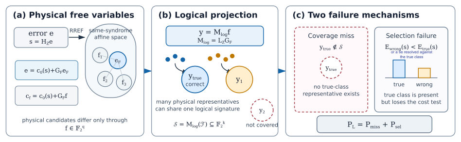
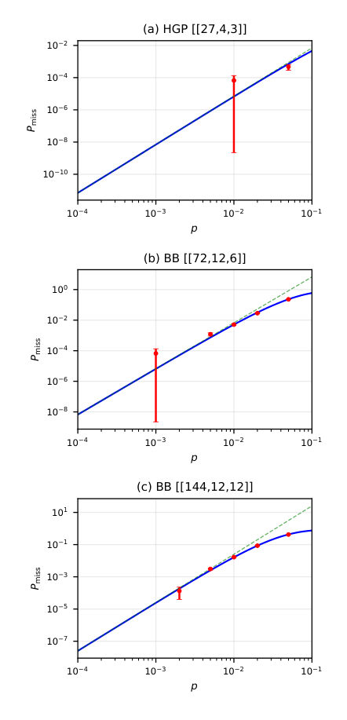
Summary. This paper develops a theoretical framework to analyze the performance of quantum LDPC code decoders by mapping physical errors to a logical signature space. It rigorously proves that the overall logical error rate decomposes into two distinct failure types: missing the true logical class (coverage miss) or selecting the wrong representative within the correct class (selection failure). This decomposition guides the construction of more efficient, coverage-aware decoding lists.
Why it may be interesting. While focused on quantum error correction, the rigorous mathematical decomposition of failure mechanisms ($P_{ ext{miss}}$ vs $P_{ ext{sel}}$) provides a generalizable theoretical tool for analyzing the limitations of any finite-list decoding scheme in quantum information.
Main problem. The paper addresses how to determine the logical error rate for quantum Low-Density Parity-Check (LDPC) codes when using candidate-based decoding methods like Ordered-Statistics Decoding (OSD).
Main result. The logical error rate ($P_L$) is rigorously decomposed into two complementary failure modes: coverage miss ($P_{ ext{miss}}$) and wrong selection ($P_{ ext{sel}}$).
Method. The authors develop a theoretical framework using a logical-signature map ($M_{ ext{log}}$) to algebraically connect physical error spaces to the logical space, allowing for exact calculation of error probabilities.
Model / system. The study focuses on quantum LDPC codes, specifically analyzing decoding performance for CSS quantum codes under X-error decoding assumptions.
Key observables. Logical Error Rate ($P_L$), Coverage Probability ($P_{ ext{cover}}$), $P_{ ext{miss}}$, and $P_{ ext{sel}}$.
Important parameters / regimes. The noise probability ($p$) of the i.i.d. bit-flip channel, and the structure of the code (e.g., the $[\![144,12,12]\!]$ gross code).
Assumptions / limitations. The exact distributional results are derived under the assumption of fixed, error-independent column orderings and an i.i.d. bit-flip channel.
Figures summary. Figures illustrate the logical-space structure, mapping free variables to logical displacements, and showing $P_{ ext{miss}}(p)$ curves comparing theoretical results with Monte Carlo simulations.
Paper structure. The paper first introduces the logical-signature map and the OSD-0 rate, then proves the exact decomposition $P_L = P_{ ext{miss}} + P_{ ext{sel}}$, and finally applies this framework to compare various decoding strategies on specific quantum codes.
Quantum decoding succeeds when a correction matches the logical class of the error, whereas ordered-statistics decoding (OSD) searches a finite list of physical corrections. We connect these spaces through a rank-$k$ logical-signature map $M_{\rm log}:\mathbb F_2^q\to\mathbb F_2^k$. For fixed, error-independent orderings it yields the exact logical-signature distribution, the OSD-0 logical error rate, and the logical-class coverage of any fixed list. For minimum-cost list decoding we prove $P_L=P_{\rm miss}+P_{\rm sel}$, separating absent-class from wrong-selection failures. Hypergraph-product and bivariate-bicycle codes are consistent with the coverage predictions. On the $[\![144,12,12]\!]$ gross code, 672 coverage-aware candidates outperform 899 combination-sweep candidates (paired McNemar $p=0.013$), while two lists with identical logical coverage give $P_L=11.30\%$ and $3.78\%$; the signature-based coverage compression persists across 30 random column orderings. Logical coverage and within-class representative selection are therefore complementary resources that candidate count alone does not capture. The framework guides OSD list construction and compression by identifying coverage requirements and distinguishing coverage losses from failures of representative selection.
Authors: Ju-Young Ryu, Tak Hur, Daniel K. Park
Type: both · Category: quantum information and computing · PDF: https://arxiv.org/pdf/2610.24426v1
Analysis basis: full PDF text, analyzed in chunks
Topic relevance: quantum measurements 1/5
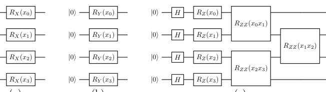
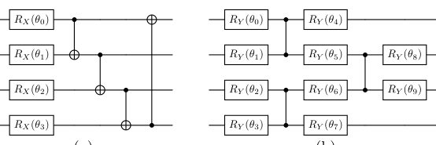
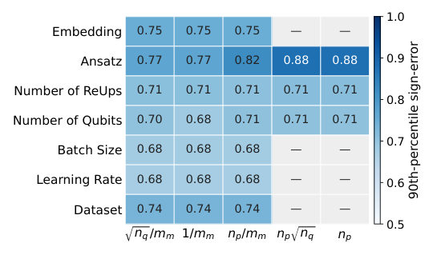
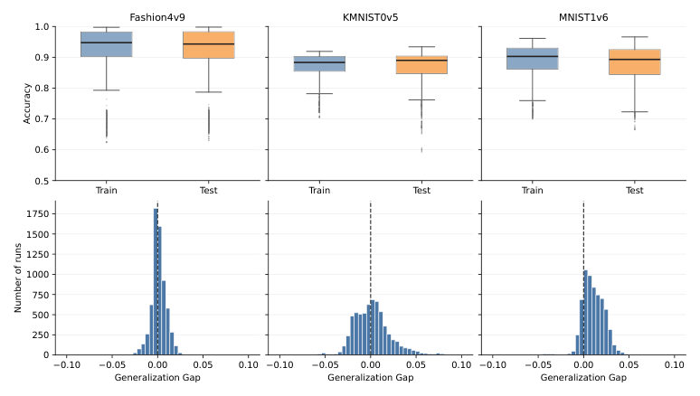
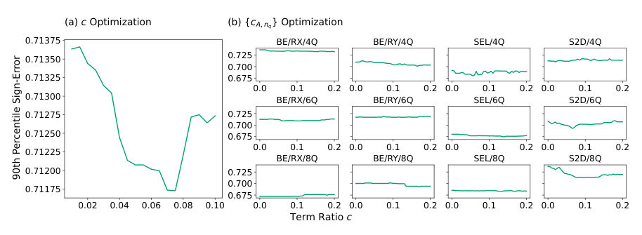
Summary. This paper establishes a rigorous, margin-based generalization theory for Quantum Machine Learning models that process classical data via quantum encoding. It derives a novel bound accounting for the complexity of trainable encoders and empirically demonstrates that the inverse margin is the most robust measure for predicting model generalization performance.
Why it may be interesting. While focused on ML theory, the rigorous bounding of complexity in QML is crucial for understanding the scalability and theoretical limits of quantum computation applied to physical measurements or data processing.
Main problem. The paper develops a generalization framework for Quantum Machine Learning (QML) when the input data is classical and requires quantum encoding, addressing the complexity introduced by this encoding step.
Main result. A margin-based generalization bound is derived for QNNs with trainable encodings, and empirical testing shows that the inverse margin performs best among various complexity measures for predicting generalization performance.
Method. The authors use margin-based generalization theory, deriving new bounds via a two-scale covering argument for trainable encodings, and validate these bounds through extensive simulations on image classification tasks.
Model / system. The model involves Quantum Neural Networks (QNNs) utilizing parameterized quantum circuits acting on $n$-qubit systems. The core challenge is handling the classical-to-quantum data encoding process, which can be fixed or trainable.
Key observables. Inverse margin, 90th-percentile sign-error, Conditional Independence Score (K), and the generalization gap (difference between true and empirical risk).
Important parameters / regimes. Number of trainable encoding parameters ($L$), training sample size ($m$), and the quantum circuit depth/architecture.
Assumptions / limitations. The analysis assumes the classical data problem reduces to the quantum-data problem when the encoding is fixed, and the derivation of the bound relies on Lipschitz continuity of the encoding family.
Figures summary. Figures summarize training/test accuracies and generalization gaps across various datasets (MNIST, KMNIST, Fashion-MNIST) and sample sizes, while tables compare the performance of different complexity measures like the inverse margin and composite measures.
Paper structure. The paper progresses from establishing the theoretical framework for fixed encodings (Theorem 1) to deriving the generalized bound for trainable encodings (Theorem 2) using a two-scale covering argument. It then validates these theoretical bounds by comparing them against empirical measures across numerous simulated training runs.
Understanding generalization is essential for assessing the practical viability of quantum machine learning. In many applications, quantum models operate on classical data that must first be encoded into quantum states, making the encoding part of the effective hypothesis class. We develop a margin-based generalization framework for this setting, covering both fixed and trainable quantum data encodings. For fixed encodings, the existing margin bound transfers unchanged. For trainable encodings, we derive a bound using a two-scale covering argument that combines the original margin-dependent term with an additive encoding-capacity term of order $\tilde O(\sqrt{L/m})$, where $L$ is the number of trainable encoding parameters and $m$ is the training-sample size. Across 19,440 simulated training runs spanning various image datasets, circuit architectures, and optimization settings, the inverse margin performs best among five baseline and two bound-derived complexity measures under conditional-independence and 90th-percentile sign-error criteria, within bootstrap uncertainty. These results provide a unified margin-based view of generalization in quantum machine learning with classical data.
Authors: Muhammad Kumail Haider, Aeysha Khalique
Type: theory · Category: quantum information and computing · PDF: https://arxiv.org/pdf/2610.26120v1
Analysis basis: full PDF text, analyzed in chunks
Topic relevance: interference shaping light 1/5
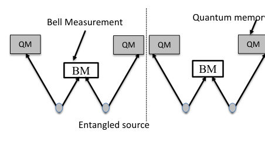
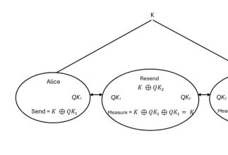
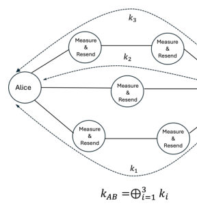
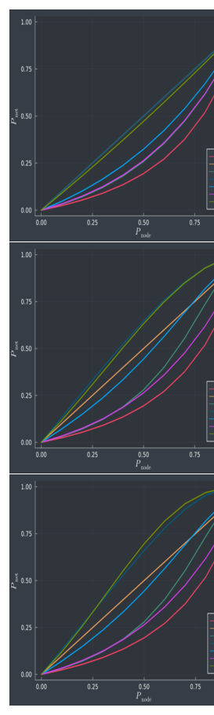
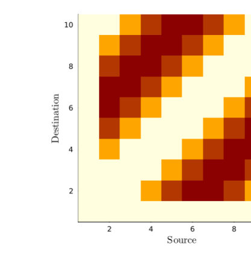
Summary. This paper addresses the vulnerability of quantum key distribution networks to compromised intermediate nodes by proposing and analyzing a multi-path routing strategy. Using graph theory, the authors quantify security improvements by showing that combining keys from multiple independent paths significantly enhances resilience against unknown adversarial compromises. The work provides a scalable framework for designing robust quantum communication infrastructure without needing quantum memory.
Why it may be interesting. While focused on QKD, the rigorous graph-theoretic analysis of network resilience, optimization of connectivity, and the use of probabilistic security bounds are highly relevant to understanding the robustness of quantum communication protocols.
Main problem. The security of quantum communication networks using trusted nodes collapses if intermediate relay nodes are compromised, especially when the compromised nodes cannot be identified.
Main result. Multi-path routing provides quantifiable protection against unidentified compromised nodes, and the framework identifies optimal topologies and routing strategies to maximize security.
Method. The authors developed a statistical and graph-theoretic analysis to model network security, utilizing multi-path key derivation via XOR combination to ensure security if at least one path remains uncompromised.
Model / system. The system is a quantum communication network using trusted nodes for Quantum Key Distribution (QKD). Security is modeled using graph theory applied to various network topologies (line, star, grid, etc.).
Key observables. Network security probability ($P_{ ext{net}}$), probability of a hack ($ ext{Phack}$), and the final secure key rate ($R_{ ext{final}}$).
Important parameters / regimes. The maximum number of compromised nodes ($T$), the probability of node compromise ($P_{ ext{node}}$), and the network topology structure.
Assumptions / limitations. The security relies on the key being formed by XORing independent keys, ensuring security if at least one path is uncompromised, and that the adversary only learns the key upon physical compromise.
Figures summary. Figures illustrate entanglement formation, the trusted node setup, and the multi-path relay network structure. Tables and plots show comparative security analysis ($ ext{Phack}$ vs $T_{ ext{nodes}}$) and optimal edge placement for various topologies.
Paper structure. The paper establishes the problem, develops statistical and graph-theoretic models for multi-path security, applies these models to analyze seven different network topologies, and concludes by proposing an iterative method for optimizing network robustness.
Quantum communication networks promise information-theoretic security but this security collapses if intermediate relay nodes are compromised, a risk that grows sharply when compromised nodes cannot be identified. We address this twofold: first, we show that multi-path routing provides quantifiable protection against unidentified compromised nodes. Second, we provide a comprehensive statistical and graph-theoretic analysis of network and node security under compromise, covering full and partial node compromise, optimal placement of additional edges via an iterative method, and comparative hacking-probability analysis across network topologies. Together, these results identify the topology and multi-path routing strategy that most improves security for a given network. We apply this framework to quantum key distribution across multiple network topologies, demonstrating a scalable route to secure, reliable quantum communication under realistic, unidentified adversarial threats, without relying on quantum memory.
Authors: Zihao Gong, Saikat Guha
Type: theory · Category: quantum information and computing · PDF: https://arxiv.org/pdf/2610.25792v1
Analysis basis: full PDF text, analyzed in chunks
Topic relevance: Keldysh / 2PI / non-Gaussian methods 1/5
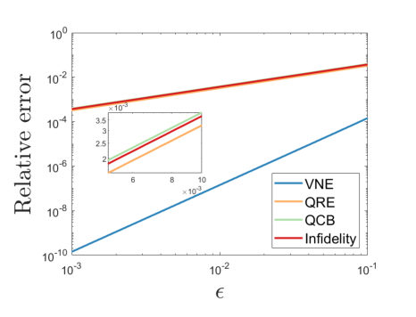
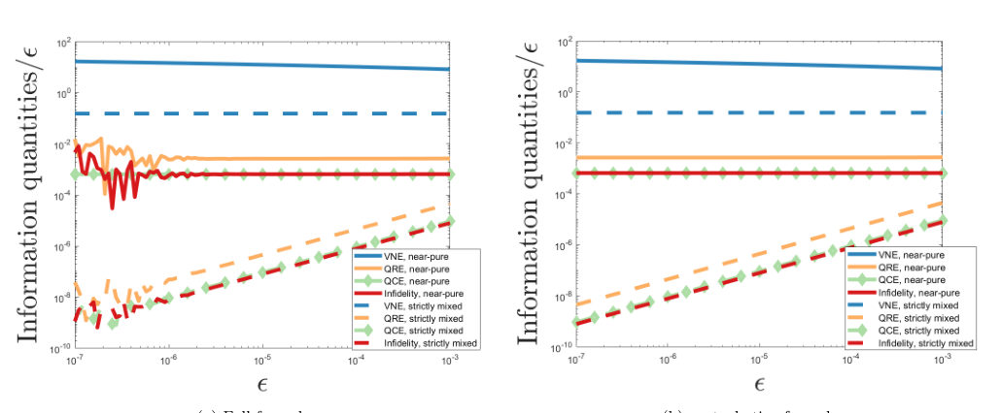
Summary. This paper introduces a unified, second-order perturbation theory for quantifying quantum information measures (like entropy and fidelity) specifically for Gaussian quantum states. By employing Fréchet derivatives, the authors derive compact formulas that avoid approximations common in other methods. This framework successfully applies to physical problems, confirming known asymptotic scaling laws in quantum illumination.
Why it may be interesting. This work provides a powerful, systematic mathematical tool to analyze the performance limits of quantum communication and sensing tasks using Gaussian resources, which is highly relevant to quantum optics and continuous-variable quantum information.
Main problem. The paper develops a unified perturbation theory for characterizing quantum information quantities (like entropy, relative entropy, and fidelity) directly within the formalism of Gaussian quantum states.
Main result. Compact second-order expressions are derived for these quantities using Fréchet derivatives, and the framework successfully recovers known asymptotic limits for tasks like quantum illumination.
Method. The core method involves applying Fréchet derivatives, which serve as a matrix generalization of the Taylor expansion, to the defining functions of the quantum information measures.
Model / system. The analysis focuses on $n$-mode bosonic systems described by Gaussian quantum states, characterized entirely by their mean vector and covariance matrix ($\sigma$).
Key observables. Von Neumann Entropy (VNE), Quantum Relative Entropy (QRE), Quantum Chernoff Quantity (QCE), and Quantum Fidelity (QF).
Important parameters / regimes. The analysis depends on the symplectic eigenvalues of the reference covariance matrix, particularly distinguishing between eigenvalues $> 1/2$ and those equal to $1/2$.
Assumptions / limitations. The derivations rely on the analyticity of the relevant matrix functions and assume the applicability of Fréchet derivative identities for Gaussian state moments.
Figures summary. Not specified in the notes, but the analysis applies the theory to quantum illumination and incoherent-light sub-Rayleigh object discrimination.
Paper structure. The paper first establishes the general perturbative framework using Fréchet derivatives for the four key quantities. It then derives the second-order expansions for each observable, followed by specific applications and analyses of asymptotic scaling regimes.
Many quantum-information tasks can benefit from Gaussian quantum resources, while their fundamental performance limits are characterized by quantum information quantities. However, a unified perturbation theory for these quantities directly within the Gaussian-state formalism has been lacking. We develop such a theory for the von Neumann entropy, quantum relative entropy, quantum Chernoff quantity, and quantum fidelity, using perturbations of the moments of a reference Gaussian state. Using general Fréchet-derivative identities, we derive compact second-order expressions for reference-state covariance matrices whose symplectic eigenvalues are all greater than $1/2$. We also show that the perturbative quantum Chernoff quantity is maximized at its symmetric point, yielding the quantum Chernoff exponent (QCE). We further show that symplectic eigenvalues equal to 1/2 can lead to slower asymptotic vanishing, potentially improving the corresponding fundamental performance limits. For reference-state covariance matrices containing symplectic eigenvalues both equal to and greater than 1/2, we identify sufficient conditions under which the former determine the leading covariance-matrix contributions, allowing the remaining modes to be traced out without changing the leading-order asymptotic scaling or the coefficient. Applying the framework to quantum illumination and incoherent-light sub-Rayleigh object discrimination, we recover known asymptotic QCEs directly within the Gaussian-state formalism. In the latter problem, the slower asymptotic vanishing explains the known quadratic scaling of the QCE with the source separation.
Authors: Kai-Wei Huang, Chien-Ting Chen, Shang-Wei Li, Fu-Jiun Jiang
Type: both · Category: statistical mechanics · PDF: https://arxiv.org/pdf/2610.25884v1
Analysis basis: full PDF text, analyzed in chunks
Topic relevance: methods for driven-dissipative 1/5
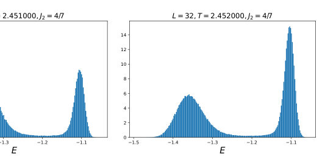
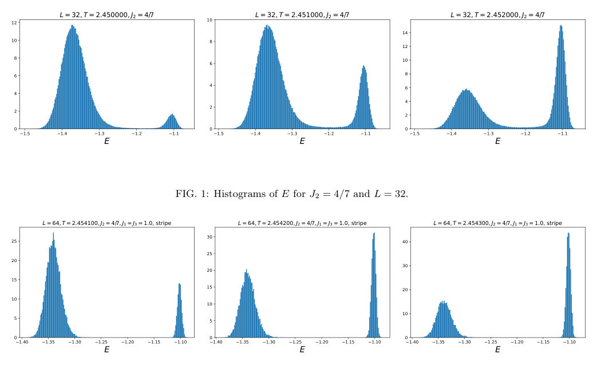
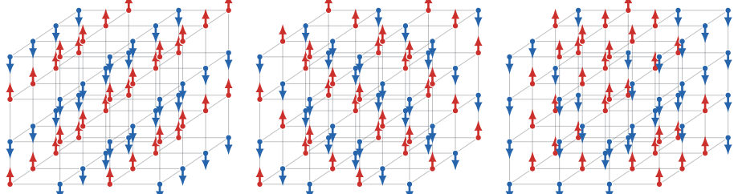
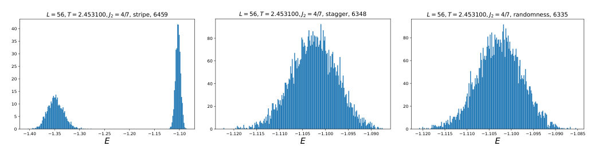
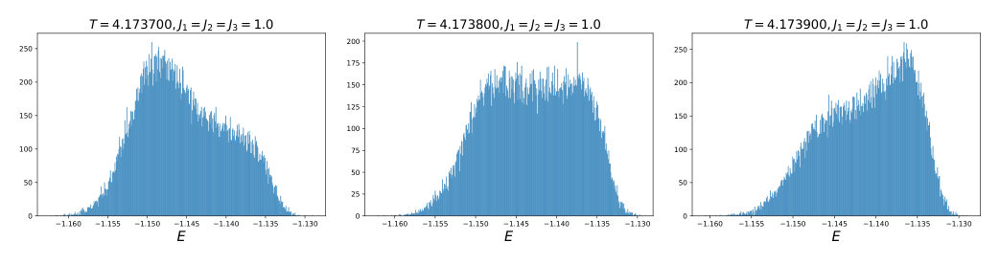
Summary. This work resolves a long-standing debate on the phase transition order of the 3D $J_1$-$J_2$-$J_3$ Ising model by combining Monte Carlo simulations and efficient Neural Network calculations. The study confirms the transition is second order for the isotropic case ($J_1=J_2=J_3=1.0$) and first order for $J_2=4/7$. The NN method is highlighted as a powerful, resource-saving tool for studying critical behavior in high-dimensional systems.
Why it may be interesting. The rigorous application of advanced numerical techniques like Neural Networks to resolve long-standing debates in classical statistical mechanics models is valuable for understanding critical phenomena in complex lattice systems.
Main problem. The study aims to resolve conflicting historical findings regarding the order of the phase transition in the three-dimensional antiferromagnetic $J_1$-$J_2$-$J_3$ Ising model on the cubic lattice.
Main result. The authors conclude that for the isotropic case ($J_1 = J_2 = J_3 = 1.0$), the phase transition is second order, while for $J_2 = 4/7$, it is first order.
Method. The research employs a combination of extensive Monte Carlo simulations and a novel, resource-efficient Neural Network (NN) technique to analyze critical behavior.
Model / system. The system is the 3D antiferromagnetic $J_1$-$J_2$-$J_3$ Ising model on the cubic lattice, described by a Hamiltonian involving nearest-neighbor ($J_1, J_3$) and next-nearest-neighbor ($J_2$) couplings.
Key observables. Energy density histograms, specific heat ($C_v$) scaling, and a diagnostic observable $R$ derived from NN calculations.
Important parameters / regimes. The couplings $J_1, J_2, J_3$, particularly the isotropic case ($J_1 = J_2 = J_3 = 1.0$) and the specific ratio $J_2/J_1 = 4/7$.
Assumptions / limitations. The NN method is shown to be highly efficient, requiring minimal storage capacity compared to standard procedures for large lattices.
Figures summary. Figures show energy histograms diagnosing first-order transitions (two-peak structure) for $J_2=4/7$, and continuous evolution of the observable $R$ across $T_c$ for $J_2=1.0$, supporting a second-order transition.
Paper structure. The paper systematically investigates the phase transition order using both MC and NN methods, first resolving the $J_1=J_2=J_3=1.0$ case, then analyzing the $J_2=4/7$ case, and finally confirming the second-order nature for $J_2=1.0$ using large-scale testing sets.
Motivated by the conflicting findings in prior studies regarding the nature of the phase transition for the three-dimensional antiferromagnetic $J_1$-$J_2$-$J_3$ Ising model on the cubic lattice with $J_1 = J_2 = J_3 = 1.0$, in this study we conduct a detailed investigation of this model using both Monte Carlo simulations and neural networks (NN). Here $J_1$ and $J_2$ are the intralayer nearest-neighbor and next-nearest-neighbor couplings, respectively, and $J_3$ is the nearest-neighbor interlayer interaction. By investigating the data obtained from much larger lattices than those used in previous studies, we find that the phase transition for $J_1 = J_2 = J_3 = 1.0$ is second order without any ambiguity. Hence we bring a resolution to this debate. Apart from $J_1 = J_2 = J_3 = 1.0$, we study the critical phenomenon associated with $J_2/J_1 = 4/7$ and $J_3 = J_1 = 1.0$ as well. In addition, by employing a dedicated training and testing strategy, our NN computation not only is much more efficient than those utilizing the standard procedures commonly used in the literature, but also requires only a per-mille fraction of the storage capacity needed by a conventional NN calculation when a large linear system size $L$ is considered. The method employed here provides an extremely resource-efficient route for applying NN techniques to study the critical behaviors of higher-dimensional systems.
Authors: Matthew Barber, Stefano Pirandola
Type: theory · Category: quantum information and computing · PDF: https://arxiv.org/pdf/2610.26783v1
Analysis basis: full PDF text, analyzed in chunks
Topic relevance: correlated / nonlocal dissipation 1/5
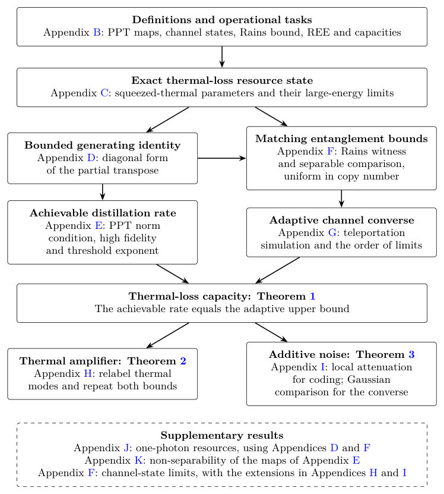
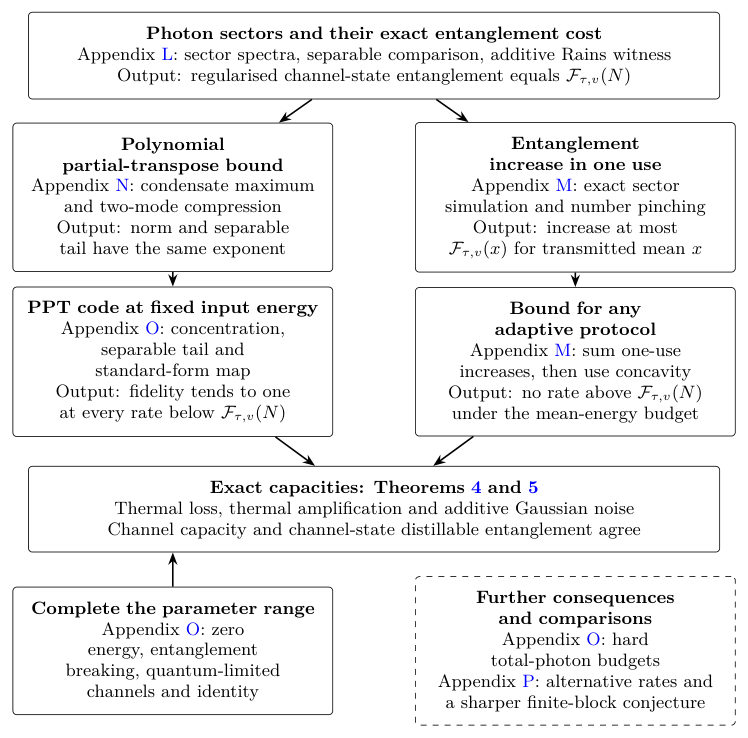
Summary. This paper calculates the exact quantum communication and entanglement-distribution capacities for key bosonic Gaussian channels (loss, amplification, noise) under the assistance of PPT-preserving operations. It establishes that these capacities match known theoretical bounds across both unconstrained and energy-constrained settings. The results provide crucial benchmarks for understanding the limits of quantum information transmission through noisy optical and microwave channels.
Why it may be interesting. This work provides rigorous, exact capacity formulas for fundamental noise channels relevant to quantum communication, directly impacting the theoretical limits of quantum networking and quantum sensing.
Main problem. The paper determines the exact quantum communication and entanglement-distribution capacities of three fundamental bosonic Gaussian channels (thermal loss, amplification, and additive noise) when assisted by PPT-preserving operations.
Main result. The PPT-assisted capacity for all three channels is found to coincide with the established PLOB bound, and these exact capacities are derived for both unconstrained and energy-constrained regimes.
Method. The analysis uses techniques involving collective distillation maps, establishing lower and upper bounds by matching constructive protocols with converse arguments.
Model / system. The system involves bosonic Gaussian channels, modeling physical processes like optical attenuation (thermal loss), amplification, and Gaussian noise, characterized by parameters like transmissivity ($\eta$), mean photon numbers ($n, \xi$), and energy constraints ($N$).
Key observables. Quantum capacity ($ ext{QPPT}$), Entanglement-distribution capacity ($ ext{DPPT}$), and the PLOB bound.
Important parameters / regimes. Transmissivity ($\eta$), environment mean photon number ($n$), amplifier gain ($\kappa$), added mean photon number ($\xi$), and the energy constraint $N$.
Assumptions / limitations. The primary assumption is the power of PPT-preserving operations, which are shown to be more powerful than LOCC but less powerful than unrestricted operations.
Paper structure. The paper systematically analyzes the capacity for each channel (loss, amplification, noise) first in the unconstrained setting, establishing equality with known bounds, and then extends the results to the energy-constrained regime using functional forms $F(N)$.
We determine the exact quantum communication and entanglement-distribution capacities of three fundamental bosonic channels, namely thermal loss, thermal amplification and additive Gaussian noise, assisted by operations that completely preserve positive partial transpose (PPT). These operations are more powerful than local operations and classical communication (LOCC), but cannot generate distillable entanglement on their own. For thermal loss, the unconstrained capacity coincides with the Pirandola-Laurenza-Ottaviani-Banchi (PLOB) bound throughout the non-entanglement-breaking regime. The corresponding upper bounds are also attained for thermal amplification and additive noise. We extend these results to energy-constrained communication, establishing exact capacities for all three channels at every prescribed mean input energy. Our results solve a class of bosonic capacity problems under PPT assistance and establish exact benchmarks for determining whether the same communication rates can be achieved via LOCC alone.
Authors: Yen-Tung Lin, Pochung Chen, Yu-Cheng Lin
Type: theory · Category: disordered systems and neural networks · PDF: https://arxiv.org/pdf/2610.24994v1
Analysis basis: full PDF text, analyzed in chunks
Topic relevance: methods for driven-dissipative 1/5
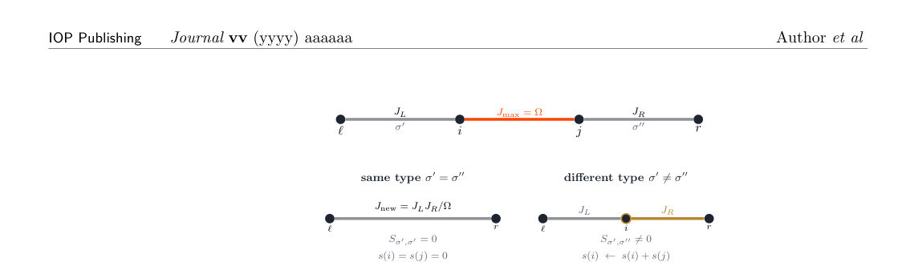
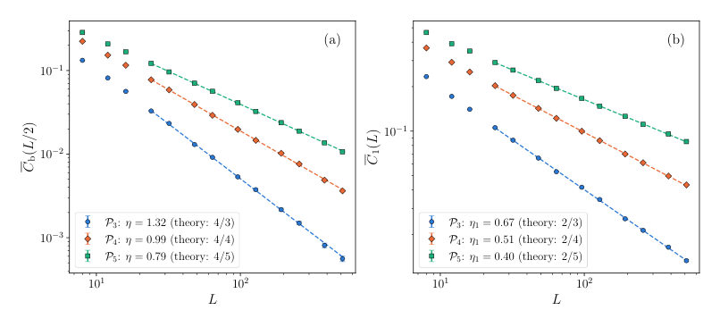
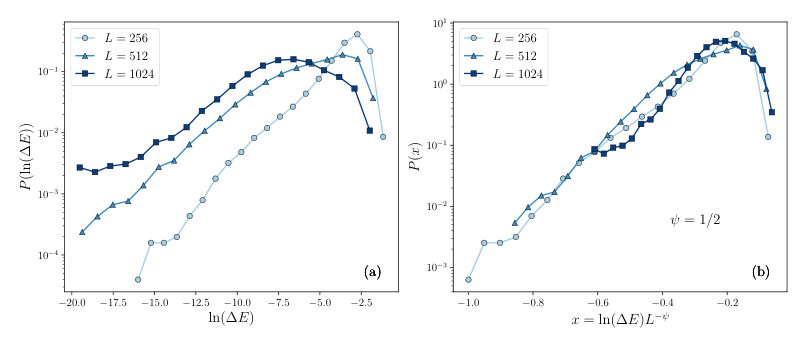
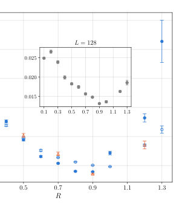
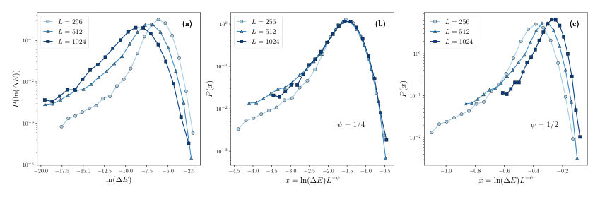
Summary. This work theoretically investigates the spin-reduction transition in random spin-3/2 Heisenberg chains using the tSDRG method. It maps this transition onto a specific $\mathcal{P}_4$ multicritical point within the Damle--Huse universality class. The study successfully predicts and confirms the critical exponents governing the system's correlation functions at this disorder-driven quantum critical point.
Why it may be interesting. The application of advanced RG techniques (tSDRG) to characterize quantum phase transitions in highly disordered magnetic systems provides a powerful theoretical tool for understanding quantum criticality in materials science.
Main problem. The paper revisits the spin-reduction transition in the random spin-3/2 antiferromagnetic Heisenberg chain, characterizing the critical point using advanced renormalization group techniques.
Main result. The transition is identified as corresponding to a $\mathcal{P}_4$ multicritical point within the Damle--Huse classification, yielding specific theoretical critical exponents ($\eta=1, \eta_1=1/2$).
Method. The study employs the Tensor-Network Strong-Disorder Renormalization Group (tSDRG) method combined with theoretical derivations from the Damle--Huse RG framework.
Model / system. The system is a random spin-3/2 antiferromagnetic Heisenberg chain, modeled by random couplings $J_i$ and analyzed through its low-energy effective degrees of freedom.
Key observables. Bulk and end-to-end correlation functions ($C_b(r) \sim r^{-\eta}$, $C_1(L) \sim L^{-\eta_1}$), and the energy gap distribution.
Important parameters / regimes. Bond randomness strength ($R$), which controls the system's location relative to the critical point ($R_c \approx 0.9$).
Assumptions / limitations. The analysis relies on the Damle--Huse classification of infinite-randomness fixed points and the applicability of the tSDRG method to capture asymptotic critical scaling.
Figures summary. Figures illustrate the domain-wall RG processes, show numerical agreement between calculated and theoretical critical exponents for $P_n$ classes, and map out phase diagrams in the randomness parameter space.
Paper structure. The paper first reviews the Damle--Huse RG theory, derives flow equations for domain couplings, and then applies the tSDRG method to calculate critical exponents and locate the $P_4$ multicritical point by analyzing correlation function scaling and gap distributions.
We revisit the spin-reduction transition in the random spin-$3/2$ antiferromagnetic Heisenberg chain using the tensor-network strong-disorder renormalization group (tSDRG). The predicted transition separates two random-singlet (RS) phases: one formed by effective spin-$1/2$ moments at weaker disorder and the other by full spin-$3/2$ moments at stronger disorder. Within the Damle--Huse classification, this transition corresponds to an emergent permutation-symmetric $\mathcal{P}_4$ multicritical point on a $\mathcal{P}_2$ critical line associated with the RS phases. We first derive the critical exponents governing the disorder-averaged bulk and end-to-end correlation functions in the $\mathcal{P}_n$ universality classes within the Damle--Huse framework. Using these theoretical predictions, together with a diagnostic constructed from the mean and variance of the energy-gap distribution, we identify the $\mathcal{P}_4$ transition point and the reentrant behavior of the RS phase.
Authors: Madhab Chandra Das, Sajid Ahmed, Uzair Hussain, Van Vung Pham
Type: theory · Category: quantum information and computing · PDF: https://arxiv.org/pdf/2610.25203v1
Analysis basis: full PDF text, analyzed in chunks
Topic relevance: quantum measurements 1/5


Summary. This paper presents QF-LOG, a simulation-based forensic framework designed to detect QKD attacks by analyzing operational log features like QBER and photon count. While the framework shows strong internal classification performance on synthetic data, the authors critically demonstrate that this performance is not robust to minor shifts in simulated operating conditions, highlighting the gap between controlled simulation and real-world reliability.
Why it may be interesting. This work directly tackles the security and reliability assessment of quantum communication protocols by applying ML to system-level diagnostics, which is crucial for realizing practical quantum networks.
Main problem. The study addresses the need to detect and classify implementation-level attacks in Quantum Key Distribution (QKD) systems by analyzing aggregated operational logs rather than raw quantum states.
Main result. While the forensic framework achieved high classification accuracy (up to 0.8243 F1-score) on a controlled synthetic dataset (Generator-A), performance degraded significantly (to $\approx 0.56$ F1-score) when tested on data from a slightly shifted simulation (Generator-B).
Method. The authors developed the Quantum Forensic Log (QF-LOG) framework, utilizing machine learning classifiers (XGBoost, Random Forest, etc.) trained on four key observable features derived from QKD operational logs.
Model / system. The system modeled is a weak coherent pulse fiber-based QKD setup. The analysis focuses on the operational logs generated by simulating various attack scenarios, including partial intercept-resend, detector-blind, and fiber-tap attacks.
Key observables. Quantum Bit Error Rate (QBER), photon count, latency in milliseconds, and abort flag.
Important parameters / regimes. The simulation uses parameters like mean photon number ($\mu$), fiber length ($L$), attenuation ($\alpha$), and detector efficiency ($\eta_d$).
Assumptions / limitations. The primary limitation is that the entire evaluation is based on controlled, physics-inspired synthetic data (Generator-A and Generator-B), not measurements from deployed hardware.
Figures summary. Figures summarize the system boundary showing adversarial conditions affecting observable QF-LOG features, and tables detail the parameters and performance metrics for the two distinct synthetic generators (A and B).
Paper structure. The paper introduces the QF-LOG framework, details the mathematical generation of the four key features under various attack conditions using two distinct simulation generators (A and B), evaluates multiple ML models on Generator-A, analyzes feature importance, and concludes by testing model robustness on Generator-B.
Quantum Key Distribution (QKD) supports secure key establishment under ideal protocol assumptions, but practical systems remain exposed to implementation-level attacks against optical channels, detectors, and controller behavior. This study presents Quantum Forensic Log (QF-LOG), a simulation-based forensic framework for analyzing aggregated QKD operational logs rather than raw quantum states. QF-LOG uses four observable features: quantum bit error rate (QBER), photon count, latency in milliseconds, and abort flag. The framework classifies normal operation and three simulated attack-related conditions: partial intercept-resend, detector-blind, and fiber-tap. A physics-inspired Generator-A dataset with 5 million balanced records was constructed using explicit mathematical generation models for all four features. A transparent threshold baseline, logistic regression, random forest, and XGBoost were evaluated on Generator-A. The full-feature learning models achieved macro F1-scores from 0.8211 to 0.8243 and outperformed the transparent two-feature comparator. Feature diagnostics showed that QBER contributed most, followed by latency in milliseconds and photon count, while no single feature reproduced the full feature set performance. Robustness was assessed on a separately generated Generator-B dataset of 5 million records that uses the same governing equations under shifted simulated operating parameters. Without retraining or tuning, their macro F1-scores decreased to values from 0.5645 to 0.5669. These findings show that QF-LOG can support interpretable forensic classification in a controlled synthetic setting, but stable internal evaluation does not establish reliability under changed simulated QKD operating conditions. The framework provides a documented basis for future evaluation across broader simulated settings and hardware-generated QKD logs.
Authors: Soomin Oh, Jiyong Han, Jinhyeok Choi, Donghae Seo, Mingu Kang, Gil Young Cho
Type: theory · Category: strongly correlated electrons · PDF: https://arxiv.org/pdf/2610.24633v1
Analysis basis: full PDF text, analyzed in chunks
Topic relevance: analog quantum simulation 1/5
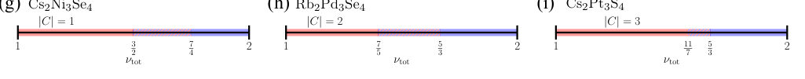
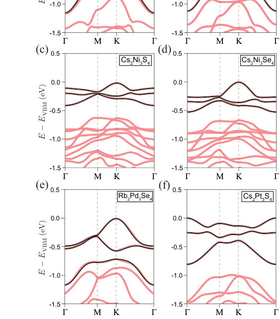
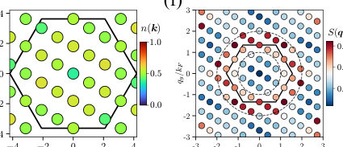
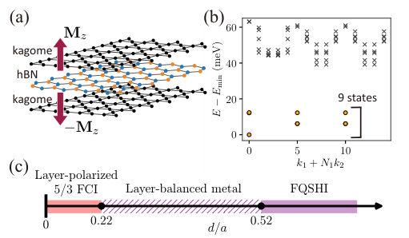
Summary. This theoretical study identifies van der Waals kagome materials as a promising platform for realizing high-temperature Fractional Chern Insulators. By combining intrinsic topological flat bands with strong Coulomb interactions, the authors predict multiple correlated phases, including FCIs and anomalous composite Fermi liquids. The work details computational methods using DFT and exact diagonalization to map out the phase space based on chemical tuning and carrier density.
Why it may be interesting. The work provides a concrete, chemically tunable material family ($ ext{A}_2 ext{T}_3 ext{X}_4$) for realizing exotic topological states at higher temperatures, which is highly relevant for condensed matter theorists studying strongly correlated electron systems.
Main problem. The paper aims to theoretically identify and study a material platform capable of realizing high-temperature Fractional Chern Insulators (FCIs) and other correlated topological phases, overcoming the limitations of current cryogenic moiré materials.
Main result. The van der Waals kagome material family A2T3X4 is proposed as a viable platform, exhibiting intrinsic topological flat bands and strong interactions that support diverse correlated states like FCIs and anomalous composite Fermi liquids at enhanced energy scales.
Method. The study employs Density Functional Theory (DFT) to derive parameters for a tight-binding model, followed by Exact Diagonalization (ED) to investigate electron-electron correlations and spontaneous symmetry breaking.
Model / system. The system is the monolayer van der Waals kagome material A2T3X4. The model incorporates a tight-binding Hamiltonian with hopping and spin-orbit coupling, and electron-electron interactions are treated via an Ohno interaction potential.
Key observables. Chern numbers, many-body gaps (e.g., $\approx 26 ext{ meV}$), structure factors $S(q)$, and momentum occupation number $n(k)$ are used to diagnose various correlated phases.
Important parameters / regimes. Gate-tunable carrier density, chemical composition (A, T, X sites), and layer stacking distance ($d/a$) are key tuning parameters. Fillings $ u_{ ext{tot}}$ are varied across several fractional values.
Assumptions / limitations. The analysis often projects onto the two spin components of the uppermost kagome band, treating lower bands as inert, and uses the Ohno interaction as a phenomenological description of interactions.
Figures summary. Figures illustrate phase diagrams showing different correlated states, band structures comparing DFT and tight-binding fits, and detailed spectral/structure factor analysis for specific phases like ACFLs and CDWs.
Paper structure. The paper progresses by first establishing the theoretical framework using DFT and tight-binding models, then applying ED to map out phase diagrams for various fillings, and finally detailing the signatures of specific phases (FCI, ACFL, CDW) using advanced diagnostics.
Fractional Chern insulators bring the fractional quantum Hall effect, with its anyonic excitations, to zero magnetic field. So far they have been realized in moiré materials, where the long superlattice period weakens electronic interactions and confines these phases to cryogenic temperatures. Early proposals instead envisioned topological flat bands on atomic-scale lattices, where fractionalization could persist to far higher temperatures, but a suitable material has been lacking. Here we theoretically identify monolayers of the recently synthesized van der Waals kagome family $\mathrm{A}_2\mathrm{T}_3\mathrm{X}_4$ as such a platform, combining intrinsic topological flat bands and strong Coulomb interactions with gate-tunable carrier density and layer assembly. Exact diagonalization of models derived from density functional theory reveals ferromagnetism over broad filling ranges, supporting diverse fractional Chern insulators, anomalous composite Fermi liquids, and charge-ordered phases. In particular, in $\mathrm{Cs}_2\mathrm{Pd}_3\mathrm{S}_4$, the fractional Chern insulator exhibits a many-body gap of approximately 26 meV in the largest system accessible with band mixing allowing at most one interband electron-hole excitation. Layer assembly further provides a natural route to fractional quantum spin Hall insulators: bilayers with antiparallel magnetizations support this phase at realistic separations. These results identify an experimentally accessible material family in which chemical composition, carrier density, and stacking offer complementary routes to fractionalization at enhanced energy scales and control over topological order.
Authors: Zhi-Wei Wang, Samuel L. Braunstein
Type: theory · Category: other · PDF: https://arxiv.org/pdf/2610.24877v1
Analysis basis: full PDF text, analyzed in chunks
Topic relevance: analog quantum simulation 1/5
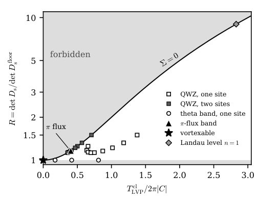
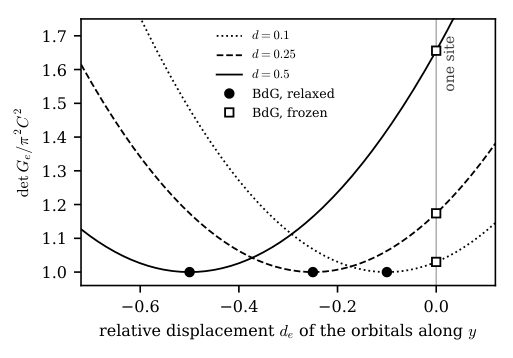
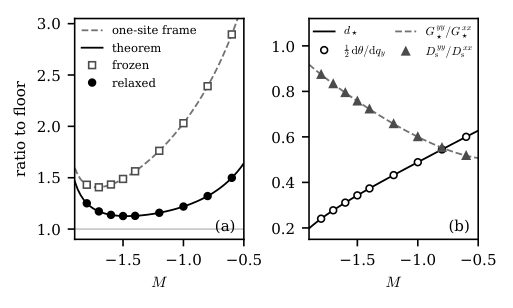
Summary. This theoretical work establishes a fundamental relationship governing the superfluid stiffness in flat-band superconductors characterized by Chern bands. It proves that the stiffness is bounded by a 'topological floor,' and any deviation from this floor requires a corresponding loss of 'vortexability.' This provides a powerful diagnostic tool for understanding the superconducting properties of topological materials.
Why it may be interesting. The work provides a rigorous, quantifiable link between topological invariants (Chern number) and macroscopic superconducting properties (superfluid stiffness) in flat-band systems, which is highly relevant for designing topological superconductors.
Main problem. The paper determines the zero-temperature superfluid stiffness of vortexable Chern bands when paired with time-reversed partners by orbital-diagonal on-site attraction.
Main result. Vortexable Chern bands are the least stiff flat-band superconductors at fixed parameters, and their stiffness sits exactly on the topological floor if and only if the splitting defect is zero.
Method. The analysis compares the exact zero-temperature stiffness determinant to a derived topological lower bound, establishing a quantitative relationship between stiffness enhancement and vortexability.
Model / system. The system involves flat-band superconductors modeled by tight-binding bands with a Chern number C, analyzed using the Bogoliubov-de Gennes (BdG) formalism.
Key observables. Superfluid Stiffness ($\det D_s(0)$), Topological Floor ($\det D_{ ext{floor}, s}(0)$), Vortexability ($ ext{Torb}, ext{TclLVP}$), and the ratio $R = \det D_s / \det D_{ ext{floor}, s}$.
Important parameters / regimes. Chern number $|C|$, pairing amplitude, and the splitting defect $\Sigma$.
Assumptions / limitations. The results assume uniform pairing and a nondegenerate paired state; the equality to the floor requires $\Sigma = 0$.
Figures summary. Figure 1 illustrates the trade-off plane showing the relationship between stiffness ratio $R$ and vortexability, forbidding an upper shaded region. Other figures test specific band models (e.g., $\Theta$ band, QWZ band) against theoretical bounds.
Paper structure. The paper establishes the theoretical relationship between stiffness and vortexability, derives the inequality $\det D_s(0) / \det D_{ ext{floor}, s}(0) = 1 + ( ext{Torb}/2\pi|C|)^2 \leq 1 + ( ext{TclLVP}/2\pi|C|)^2$, and then verifies this theorem across various physical models and lattice structures.
Vortexable Chern bands host ideal fractional Chern insulators. Paired with time-reversed partners by orbital-diagonal on-site attraction, they are the least stiff flat-band superconductors at fixed Chern number $C$, filling, and pairing amplitude. For uniform pairing and a nondegenerate paired state, the exact $T=0$ stiffness determinant is the topological floor times $1+(\Torb/2π|C|)^2\le1+(\TLVP/2π|C|)^2$, where $\Torb$ and $\TLVP$ measure departures from vortexability. Enhancement costs vortexability, and the inequality is strict only if internal components share a site, as in heterostrained bilayers.
Papers from primary archives without highlighted authors or any topic match. Click to expand.
Authors: Charilaos C. Angelidis, Ioannis K. Marmorkos
Type: theory · Category: quantum information and computing · PDF: https://arxiv.org/pdf/2610.26034v1
Analysis basis: full PDF text, analyzed in chunks
Summary. This paper proposes and analyzes a dual-uplink dual-satellite architecture to enable long-distance quantum entanglement distribution. By introducing an inter-satellite link, the design overcomes the geometric limitations that restrict single-satellite systems to regional scales. The results demonstrate that this dual-node approach significantly extends the achievable communication distance while maintaining high fidelity, marking a key step toward a scalable quantum internet.
Why it may be interesting. This work is highly relevant to quantum optics and quantum networks, providing detailed theoretical modeling of loss mechanisms (atmospheric, geometric, noise) crucial for designing scalable quantum communication infrastructure.
Main problem. The primary challenge is achieving long-distance quantum entanglement distribution by overcoming the exponential signal losses inherent in terrestrial optical fibers.
Main result. The proposed dual-satellite architecture successfully mitigates geometric constraints, enabling quantum links over intercontinental distances that are infeasible for single-satellite systems.
Method. The authors developed a comprehensive simulation framework using a realistic channel model that incorporates geometric attenuation, atmospheric turbulence, background noise, and Bell-state measurement efficiency.
Model / system. The system models quantum entanglement distribution using ground stations connected via two orbiting satellites and an Inter-Satellite Link (ISL). The architecture compares a single-satellite setup against a dual-satellite setup, which utilizes the ISL to decouple ground separation from uplink geometry.
Key observables. Overall success probability, practical fidelity (F), and the achievable communication distance ($D_G$).
Important parameters / regimes. Satellite altitude ($h$), ground-station separation ($D_G$), wavelength ($\lambda$), and atmospheric turbulence parameters ($C_w$).
Assumptions / limitations. The analysis assumes nighttime operation to avoid overwhelming solar background noise, and the ISL propagation is modeled as a deterministic free-space optical channel in vacuum.
Figures summary. Figures illustrate the geometry of the dual-satellite link and compare the success probability and fidelity of the single-satellite versus the dual-satellite architecture as a function of ground station separation distance.
Paper structure. The paper first establishes the limitations of single-satellite uplinks. It then introduces and models the dual-uplink dual-satellite architecture, detailing the physical models for uplink and ISL propagation losses. Finally, it compares the performance metrics (success probability and fidelity) of both architectures across varying ground separations.
Satellite-based quantum links are a promising enabler of long-distance entanglement distribution, overcoming the exponential losses of optical fibers. In uplink architectures, entangled photons are generated at ground stations and transmitted to orbiting satellites, reducing space-segment complexity but introducing significant atmospheric and geometric losses. Single-satellite dual-uplink configurations are additionally limited by the requirement of simultaneous visibility between both ground stations and the satellite. In this work, we investigate a dual-uplink dual-satellite network architecture and compare its performance with the single-satellite scheme under identical physical assumptions. The proposed topology introduces an inter-satellite link (ISL) that decouples the ground-station separation from the atmospheric uplink geometry. A realistic channel model is employed, incorporating geometric attenuation, atmospheric turbulence, background noise, and Bell-state measurement efficiency. The overall success probability and practical fidelity are evaluated as functions of satellite altitude and ground-station separation. Our results show that while the single-satellite configuration is suitable for regional-scale networks, it becomes infeasible for large separations due to geometric constraints. The proposed dual-satellite architecture mitigates this limitation and significantly extends the achievable communication distance, representing a key step toward scalable quantum internet infrastructures.
Authors: Omar Hussein, Laurent Capolungo, Danny Perez
Type: theory · Category: disordered systems and neural networks · PDF: https://arxiv.org/pdf/2610.24432v1
Analysis basis: full PDF text, analyzed in chunks
Summary. This work introduces and validates a novel, highly transferable interatomic potential (GRACE) for W-Ta alloys using an entropy-maximized training methodology. The potential is shown to accurately predict numerous bulk and defect properties of the system. Applying this model, the authors successfully simulate how Ta segregates to grain boundaries and subsequently pins the boundary's migration under shear stress.
Why it may be interesting. While focused on materials science, the core methodology—using machine learning (GRACE) trained on high-dimensional, entropy-maximized data to achieve transferability across diverse physical regimes—is highly relevant to developing ML potentials for complex quantum many-body systems.
Main problem. The primary goal is to develop an accurate, transferable interatomic potential for W-Ta alloys to simulate complex coupled defect, mechanical, and microstructural evolution relevant to fusion reactors.
Main result. The developed GRACE potential accurately describes various physical properties, and simulations demonstrate that Ta segregation at grain boundaries impedes grain boundary migration, a process whose de-pinning stress plateaus upon saturation.
Method. The authors developed a Graph Atomic Cluster Expansion (GRACE) potential trained using an information entropy maximization approach on DFT-generated data, which was then validated across numerous physical properties.
Model / system. The system under study is Tungsten-Tantalum (W-Ta) alloys, modeled using the GRACE interatomic potential. The potential is validated across BCC W and Ta, covering properties like elasticity, defect energetics, and phase stability.
Key observables. De-pinning stress, Ta segregation patterns (site-selectivity), lattice constants, cohesive energies, elastic constants, and phonon dispersion relations.
Important parameters / regimes. Temperature (influencing segregation/pinning), Ta concentration, and the specific crystallographic nature of the grain boundary ($\Sigma5(120)$).
Assumptions / limitations. The key assumption is that the entropy-maximized training data leads to a potential that is highly transferable, allowing it to predict mechanisms not explicitly included in the training set.
Figures summary. Figures compare the predictive accuracy of GRACE against other potentials (EAM/FS, GEAM) for energies and forces, and show the effect of temperature on segregation/pinning.
Paper structure. The paper first introduces the need for accurate potentials for W-Ta systems. It details the GRACE potential development using entropy maximization and validates it against a wide range of DFT-calculated properties (unary/binary stability, elasticity, defects). Finally, it applies the potential to simulate Ta segregation and its effect on grain boundary migration.
Tungsten-tantalum alloys are promising plasma-facing materials for fusion reactors, but simulations of their coupled defect, mechanical, and microstructural evolution require an interatomic potential that remains accurate across diverse atomic environments. We develop a transferable W-Ta potential within the GRaph Atomic Cluster Expansion (GRACE) framework. The primary training dataset was generated automatically by maximizing information entropy in an atomically relevant feature space, avoiding manual enumeration of the structures and processes required for specific downstream applications. Extensive validation demonstrates a consistent description of unary and binary phase stability, elasticity, phonons, high-pressure response, surfaces, point defects, dislocation energetics, transformation pathways, alloy thermodynamics, and melting behavior. As a demonstration, the potential is applied to Ta segregation and shear-coupled migration of a $\Sigma5(120)$ W GB. Simulations reveal strongly site-selective segregation: Ta preferentially occupies a small subset of crystallographically distinct atomic rows. Under shear, segregated Ta impedes disconnection-mediated grain boundary migration. The de-pinning stress initially increases with Ta concentration but plateaus as the dominant pinning environment becomes saturated, while increasing temperature weakens both segregation and pinning. These results establish a broadly validated W-Ta potential and demonstrate how automated entropy-maximized data generation can produce transferable atomistic models capable of resolving mechanisms not explicitly targeted during training.
Authors: Omar Madany, Lubos Mitas
Type: theory · Category: strongly correlated electrons · PDF: https://arxiv.org/pdf/2610.24450v1
Analysis basis: full PDF text, analyzed in chunks
Summary. This work develops a comprehensive, high-precision database for the electronic structure of heavy sixth-period elements (Cs-Rn) using effective core potentials. It rigorously quantifies how electron correlation energy is partitioned between kinetic and potential terms, and critically separates the inherent fixed-node error from the localization error in Quantum Monte Carlo simulations. This provides crucial insight into the limitations of current many-body approximations for heavy atoms.
Why it may be interesting. While focused on heavy atoms, the rigorous error decomposition techniques ($\epsilon_{ ext{FN}}$ vs. $\epsilon_{ ext{loc}}$) are foundational to accurately modeling strongly correlated systems where electron-electron interactions are paramount.
Main problem. The paper aims to systematically characterize electron correlation, potential-to-kinetic energy partitioning, and combined fixed-node and locality biases in Quantum Monte Carlo calculations for heavy elements.
Main result. It establishes a periodic-table-wide database for sixth-period elements (Cs-Rn), quantifying how pseudopotential choices govern energy partitioning and the balance between fixed-node and localization errors.
Method. The study combines high-level correlated many-body methods (CCSDT(Q), FCI) for benchmarks with Fixed-Node Diffusion Monte Carlo (FNDMC) to analyze systematic errors.
Model / system. The system under study is the electronic structure of sixth-period elements (Cs-Rn) modeled using correlation-consistent effective core potentials (ccECPs).
Key observables. Kinetic-to-Total Energy Ratio ($\xi$), combined fixed-node and locality biases ($\eta$), and the separation of fixed-node ($\epsilon_{ ext{FN}}$) and localization ($\epsilon_{ ext{loc}}$) errors.
Important parameters / regimes. The analysis spans the entire sixth period, revealing trends like a $5d$ plateau and a sharp decline across the $6p$ block.
Assumptions / limitations. The analysis relies on the single-reference Slater-Jastrow trial wavefunction and the fixed-node approximation in FNDMC.
Figures summary. Figures illustrate the ratio $\xi$ vs. core size, and 3D cross-sections of nodal hypersurfaces, showing increasing topological complexity with $Z_{ ext{eff}}$.
Paper structure. The paper first establishes high-precision benchmarks for Cs-Rn, then systematically analyzes the energy partitioning ($\xi$) and error sources ($\eta$) in FNDMC, culminating in a comprehensive, periodic-table-wide database.
Atomic benchmarks for sixth-period elements (Cs-Rn) are established to sub-millihartree precision under correlation-consistent effective core potentials (ccECPs) using coupled-cluster [up to CCSDT(Q)] and full configuration interaction methods. These references systematically characterize electron correlation, potential-to-kinetic energy partitioning, and combined fixed-node and locality biases ($η$) in fixed-node diffusion Monte Carlo (FNDMC). The valence kinetic-to-total energy ratio ($ξ$) departs from the non-relativistic all-electron Coulombic virial limit ($ξ=100\%$), remaining confined between 25.8$\%$ and 37.6$\%$. The Un-pseudizing of semi-core shells decreases $ξ$ as the attractive potential energy deepens faster than the accompanying kinetic energy escalates. Periodic trends in $ξ$ reveal a $5d$ plateau near 34$\%$, with a lanthanide-contraction-driven maximum in Hf, followed by a sharp decline across the $6p$ block. In FNDMC, $η$ escalates rapidly at the onset of group-1/2 and toward the $6p$ closed-shell limit, peaking at 5.42$\%$ in Rn. Although fixed-node errors dominate $η$ in most sixth-period elements, a locality error inversion occurs in Bi, with Pb exhibiting comparable error magnitudes. Furthermore, core-valence partitioning alters trial wavefunction nodal topology: in Tl, three-dimensional nodal cross-sections reveal isolated toroidal domains that confine walkers. This work completes the periodic-table-wide ccECP database from H to Rn, revealing how pseudopotential choices govern energy partitioning, nodal topology, and the balance between fixed-node and localization errors.
Authors: Xingzhi Wang, Zohar Nussinov, Gerardo Ortiz
Type: theory · Category: statistical mechanics · PDF: https://arxiv.org/pdf/2610.26859v1
Analysis basis: full PDF text, analyzed in chunks
Summary. This work explores quantum ordering on complex, non-amenable lattices using the $p$-state clock model. The authors demonstrate a novel 'boundary-sensitive' order in an intermediate phase, where the bulk state is dictated by the boundary condition even when the system appears symmetric. This challenges the traditional understanding of phase transitions based solely on spontaneous symmetry breaking.
Why it may be interesting. The concept of boundary-sensitive order provides a new mechanism for quantum phase transitions, suggesting that boundary conditions can dictate bulk physics in ways that defy standard mean-field or symmetry-breaking paradigms.
Main problem. The paper investigates novel forms of bulk quantum ordering in systems defined on non-amenable lattices that cannot be explained by conventional Landau spontaneous symmetry-breaking theory.
Main result. They establish the existence of a boundary-sensitive quantum order in an intermediate phase, where bulk order is induced by an arbitrarily weak boundary field rather than by symmetry breaking.
Method. The study combines boundary-retaining iDMRG techniques with an exact symmetry-fixing duality to analyze the quantum $p$-state clock model.
Model / system. The system is the quantum $p$-state clock model ($p \ge 2$) Hamiltonian studied on the coordination-3 infinite Cayley tree, a non-amenable lattice.
Key observables. Boundary-bond entanglement entropy ($S_\partial$), central polarization ($m_0$), and the comparison of bulk observables in boundary-biased versus symmetric states.
Important parameters / regimes. The ratio of coupling strengths $K = J/h$ and the boundary bias $B_\partial = h_\partial/h$, analyzed in the limit $B_\partial o 0^+$.
Assumptions / limitations. The analysis requires treating the full boundary-retained quantum system, as standard bulk optimization methods fail to capture the extensive boundary effects.
Figures summary. Figures illustrate the quantum phase diagram for $p=2$ and $p=3$, showing the intermediate phase, and demonstrate boundary-to-bulk propagation of magnetization profiles.
Paper structure. The paper first establishes the theoretical framework using symmetry-fixing duality and bond-algebraic mapping. It then applies infinite-DMRG schemes to the Cayley tree and its dual to calculate observables, culminating in the characterization of the three distinct quantum phases.
We show that quantum systems on non-amenable lattices, whose boundaries constitute an extensive fraction of the system, host novel forms of bulk ordering with no Euclidean counterpart. Combining boundary-retaining iDMRG with an exact symmetry-fixing duality, we investigate $p<5$ state clock models on the coordination-3 infinite Cayley tree. We find that between the ordered and disordered phases lies an emergent intermediate phase with bulk order induced by an arbitrarily weak boundary field rather than by conventional spontaneous symmetry-breaking. This establishes boundary-sensitive order as a distinct quantum ordering mechanism defying Landau's spontaneous symmetry-breaking paradigm. The intermediate phase realizes a bulk-boundary correspondence in which the unpolarized boundary selects a specific ordered bulk state.
Authors: Dmytro Gavinsky
Type: theory · Category: quantum information and computing · PDF: https://arxiv.org/pdf/2610.24742v1
Analysis basis: full PDF text, analyzed in chunks
Summary. This theoretical paper proves a separation between two quantum complexity classes, $ ext{BQP}^{ ext{cc}}$ and $ ext{MA}^{ ext{cc}}$, by analyzing a specific bipartite language. Using a lower-bound technique, the authors demonstrate that while the quantum communication cost is low (polylogarithmic), the Merlin-Arthur communication cost grows polynomially with the input size. This result significantly refines our understanding of the computational power achievable with quantum versus classical-assisted verification protocols.
Why it may be interesting. This work provides a concrete separation result between two major complexity classes ($ ext{BQP}^{ ext{cc}}$ and $ ext{MA}^{ ext{cc}}$) using communication complexity, which is a fundamental topic in quantum information theory and computational complexity.
Main problem. The paper aims to prove that the quantum communication complexity class $ ext{BQP}^{ ext{cc}}$ is not contained within the Merlin-Arthur communication complexity class $ ext{MA}^{ ext{cc}}$.
Main result. By analyzing a specific bipartite language $G_n = 1 - ext{Cheat-Shapen}$, the authors show that its quantum communication complexity is polylogarithmic, while its Merlin-Arthur communication complexity grows at least as fast as $n^{1/4}$, thus establishing $ ext{BQP}^{ ext{cc}} ot\subseteq ext{MA}^{ ext{cc}}$.
Method. The proof employs a lower-bound argument, building upon techniques from Klauck [2], by analyzing the acceptance probability of the protocol under specific distributions.
Model / system. The analysis is performed on a bipartite language $L_n$ (specifically $G_n$) defined over inputs of size $N_n$, comparing the costs of quantum communication protocols ($ ext{Q}^{ ext{cc}}$) versus public-coin Merlin-Arthur protocols ($ ext{MA}^{ ext{cc}}$).
Key observables. The primary observable is the communication cost, comparing $ ext{Q}^{ ext{cc}}(G_n) \in O(\log^3 N_n)$ against $ ext{MA}^{ ext{cc}}(G_n) \in \Omega(n^{1/4})$.
Important parameters / regimes. The complexity measure depends on the input size $N_n$ and the error parameter $\epsilon$.
Assumptions / limitations. The lower-bound argument relies on prior work by Klauck [2], and the final corollary assumes that the sequence $(N_n)_n$ is strictly monotone.
Paper structure. The paper introduces the complexity measures for quantum and Merlin-Arthur communication protocols, defines the specific bipartite language $G_n$, and then proceeds with a detailed lower-bound proof (Theorem 3.1) leading to the final separation result (Corollary 3.2).
We exhibit a bipartite language with a poly-logarithmic quantum communication protocol and polynomial Merlin-Arthur communication complexity.
Authors: Elsa Mizrahi, Uzi Pereg
Type: theory · Category: quantum information and computing · PDF: https://arxiv.org/pdf/2610.25334v1
Analysis basis: full PDF text, analyzed in chunks
Summary. This paper rigorously compares the capacity of classical relay channels under two different delay assumptions: unit-delay and zero-delay. It demonstrates a sharp contrast: entanglement offers no benefit for the unit-delay case, but it significantly boosts the capacity of the zero-delay channel, violating classical capacity bounds.
Why it may be interesting. This work provides a clear, quantitative boundary distinguishing when quantum resources (entanglement) provide a genuine advantage in classical communication tasks, which is fundamental to quantum network theory.
Main problem. The paper investigates whether quantum entanglement can enhance the achievable capacity of a classical relay channel compared to classical limits.
Main result. Entanglement significantly increases the capacity of a zero-delay relay channel, allowing rates to exceed the cutset upper bound by at least 12.5%, while for a unit-delay channel, entanglement provides no such advantage.
Method. The authors use information-theoretic bounds, specifically the cutset bound, and construct explicit examples (like the magic-square game) to demonstrate achievable rates for both delay regimes.
Model / system. The system is a three-terminal classical relay channel (sender, relay, destination). The analysis distinguishes between two relay operation modes: unit-delay (strictly-causal) and zero-delay (causal).
Key observables. Capacity ($C_{ET}$), achievable rates, and the cutset upper bound.
Important parameters / regimes. The degree of delay (unit vs. zero) and the presence/absence of pre-shared entanglement ($\Psi_{AG_0}$).
Assumptions / limitations. The analysis assumes the availability of pre-shared entanglement between the source and relay, and it compares results based on the causality constraints of the relay encoding.
Figures summary. Figures illustrate the basic three-terminal relay channel, the difference between strictly-causal and causal encoding, and the setup for unit-delay and zero-delay channels with entangled transmitters.
Paper structure. The paper first analyzes the unit-delay, strictly-causal case, proving that entanglement does not boost capacity relative to the cutset bound. It then contrasts this with the zero-delay, causal case, where it demonstrates a significant capacity enhancement using a specific channel model.
We show positive and negative results on classical relay channels with entanglement assistance, revealing a sharp contrast between strictly causal and causal relay encoding. First, we consider van der Meulen's setting of a unit-delay relay, with strictly causal encoding. We show that the standard cutset upper bound continues to hold with entanglement assistance, and deduce that entanglement does not increase the capacity for several classes of relay channels. Second, we consider a zero-delay relay, where the encoding is causal. We present an example in which entanglement enables rates that exceed the cutset upper bound by at least 12.5%. Namely, entanglement shared between the source and relay significantly increases the capacity of a classical zero-delay relay channel.
Authors: Takuma Kuno, Takeru Utsugi, Andrew J. Ramsay, Hideo Arimoto, Tetsuo Kodera, Hiroyuki Mizuno
Type: theory · Category: quantum information and computing · PDF: https://arxiv.org/pdf/2610.24582v1
Analysis basis: full PDF text, analyzed in chunks
Summary. This paper investigates methods to protect two-qubit gates in semiconductor spin qubits from environmental noise using Concatenated Continuous Driving (CCD). The authors demonstrate that CCD effectively suppresses common-mode noise but that the gate fidelity remains limited by differential detuning errors. They establish that the symmetry and spatial correlation of noise are critical factors governing the overall robustness of these quantum gates.
Why it may be interesting. This work provides detailed theoretical insights into noise resilience in solid-state quantum computation platforms, specifically quantifying the roles of noise symmetry and spatial correlation in determining gate performance.
Main problem. The primary challenge is achieving robust, high-fidelity two-qubit gates in semiconductor spin qubits, which are highly susceptible to low-frequency detuning noise and control errors.
Main result. Concatenated Continuous Driving (CCD) significantly enhances gate protection against common-mode detuning and Rabi-frequency errors; however, the gate fidelity remains sensitive to differential detuning errors.
Method. The authors analyze the system by transforming the Hamiltonian into a second rotating frame and applying perturbative techniques (Schrieffer-Wolff transformation) to analyze error corrections.
Model / system. The system involves exchange-based two-qubit gates (SWAP, $\sqrt{ ext{SWAP}}$) implemented on double-dressed semiconductor spin qubits using a global phase-modulated microwave drive.
Key observables. Gate fidelity ($F_{ ext{avg}}$), SWAP oscillation population ($P_{\uparrow\downarrow}$), and the dependence of fidelity on detuning ($\delta$) and Rabi-frequency errors ($\Delta$).
Important parameters / regimes. Common-mode vs. differential detuning ($\delta_c$ vs. $\delta_d$), Rabi-frequency mismatch, and the spatial correlation of qubit-frequency noise.
Assumptions / limitations. The analysis relies on the Rotating-Wave Approximation (RWA) and assumes that the secondary field, if used, must be identical for both qubits during the exchange pulse.
Figures summary. Figures illustrate the SWAP dynamics and gate infidelity under various noise conditions, showing that PMCCD broadens the low-infidelity region against common errors but leaves residual sensitivity to differential detuning.
Paper structure. The paper progresses from establishing the need for robust gates, introducing CCD protection against common errors, deriving the Hamiltonian corrections due to differential detuning, and finally comparing the residual sensitivity to exchange-coupling fluctuations.
Exchange-based two-qubit gates in semiconductor spin qubits are sensitive to low-frequency detuning noise and control errors. Here, we extend concatenated continuous driving (CCD), implemented by phase modulation of a global microwave drive, to exchange-based SWAP and $\sqrt{\mathrm{SWAP}}$ operations between double-dressed spin qubits and investigate its effectiveness for protecting two-qubit gates. We find that CCD retains strong protection against quasistatic common-mode detuning errors while substantially improving robustness against Rabi-frequency errors and qubit-to-qubit Rabi-frequency mismatch compared with conventional continuous dressing. By contrast, the gate fidelity is impacted by differential detuning errors. By modeling partially correlated quasistatic detuning noise, we further show that the noise-averaged gate fidelity depends strongly on the spatial correlation of the qubit-frequency fluctuations, with positive correlations enhancing CCD protection by suppressing the differential-noise component. These results identify the symmetry and spatial correlation of qubit-frequency noise as key factors governing continuous-drive protection in coupled spin-qubit systems.
← Index · ← Previous · Next →